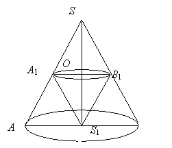

Прямой круговой конус с наибольшим объемом
вписан в данный конус так, что вершина внутреннего конуса находится в центре
основания данного конуса. Докажите, что высота внутреннего конуса составляет
одну треть высоты данного конуса.
РЕШЕНИЕ:
Обозначим ,
, ,
, .
~: .
.
, при ,
откуда , что не удовлетворяет условию
и .
Вблизи меняет знак с + на –, значит, при объем вписанного конуса является наибольшим.
